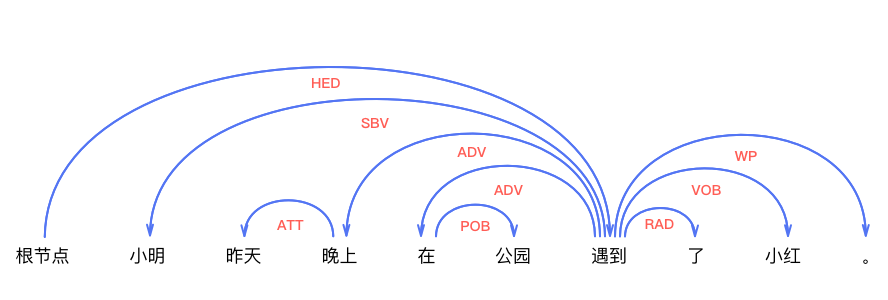
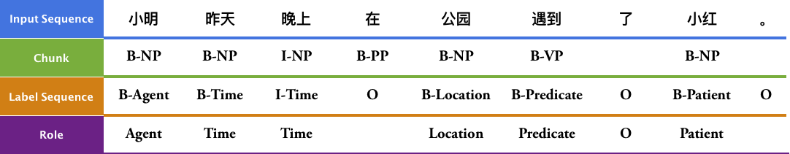
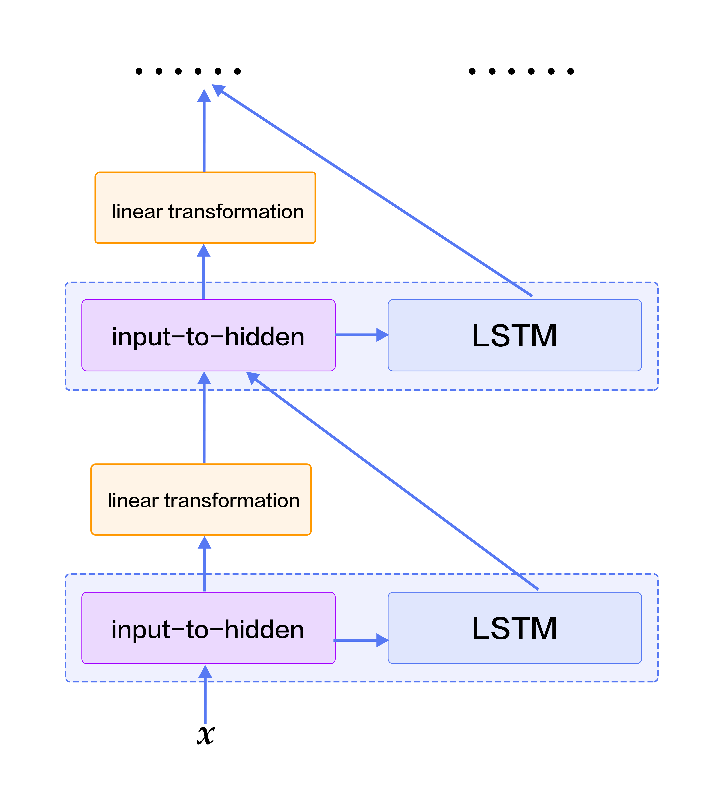
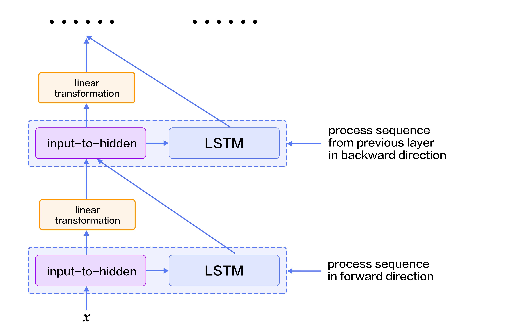
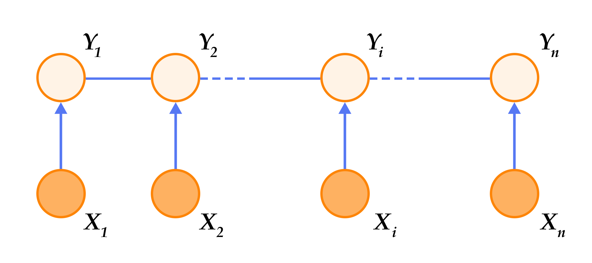
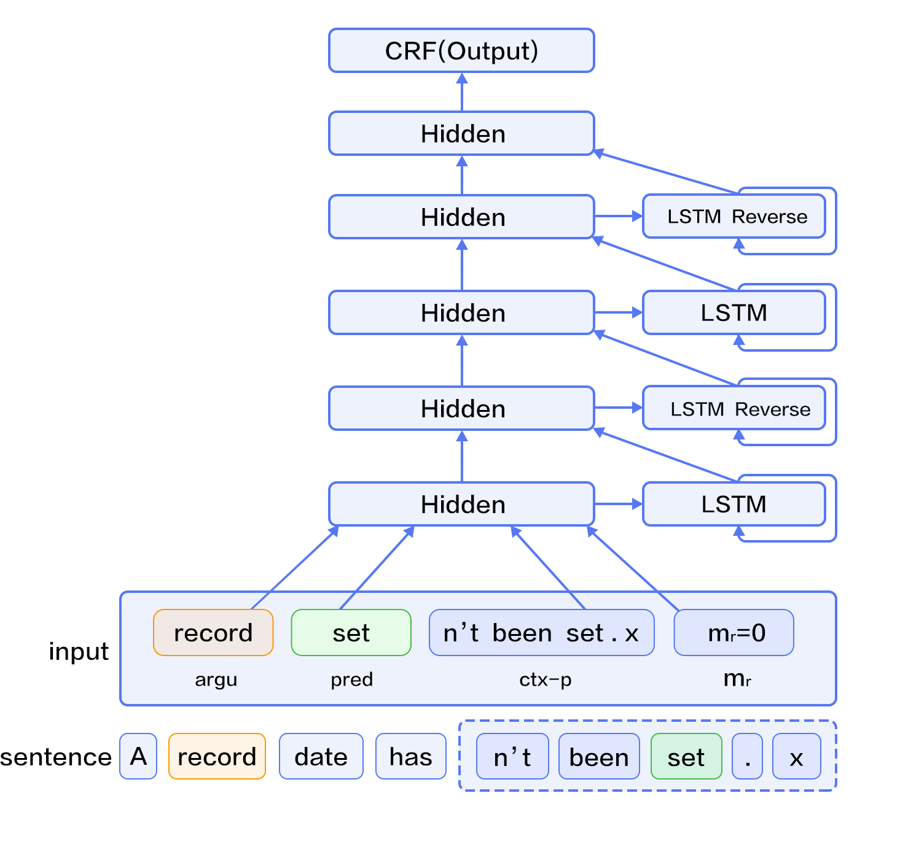

# Semantic Role Labeling
The source code of this chapter locates at [book/label_semantic_roles](https://github.com/PaddlePaddle/book/tree/develop/07.label_semantic_roles).
For instructions on getting started with PaddlePaddle, see [PaddlePaddle installation guide](https://github.com/PaddlePaddle/book/blob/develop/README.md#running-the-book).
## Background
Natural language analysis techniques consist of lexical, syntactic, and semantic analysis. **Semantic Role Labeling (SRL)** is an instance of **Shallow Semantic Analysis**.
In a sentence, a **predicate** states a property or a characterization of a *subject*, such as what it does and what it is like. The predicate represents the core of an event, whereas the words accompanying the predicate are **arguments**. A **semantic role** refers to the abstract role an argument of a predicate take on in the event, including *agent*, *patient*, *theme*, *experiencer*, *beneficiary*, *instrument*, *location*, *goal*, and *source*.
In the following example of a Chinese sentence, "to encounter" is the predicate (*pred*); "Ming" is the *agent*; "Hong" is the *patient*; "yesterday" and "evening" are the *time*; finally, "the park" is the *location*.
$$\mbox{[小明 Ming]}_{\mbox{Agent}}\mbox{[昨天 yesterday]}_{\mbox{Time}}\mbox{[晚上 evening]}_\mbox{Time}\mbox{在[公园 a park]}_{\mbox{Location}}\mbox{[遇到 to encounter]}_{\mbox{Predicate}}\mbox{了[小红 Hong]}_{\mbox{Patient}}\mbox{。}$$
Instead of analyzing the semantic information, **Semantic Role Labeling** (**SRL**) identifies the relationship between the predicate and the other constituents surrounding it. The predicate-argument structures are labeled as specific semantic roles. A wide range of natural language understanding tasks, including *information extraction*, *discourse analysis*, and *deepQA*. Research usually assumes a predicate of a sentence to be specified; the only task is to identify its arguments and their semantic roles.
Conventional SRL systems mostly build on top of syntactic analysis, usually consisting of five steps:
1. Construct a syntax tree, as shown in Fig. 1
2. Identity the candidate arguments of the given predicate on the tree.
3. Prune the most unlikely candidate arguments.
4. Identify the real arguments, often by a binary classifier.
5. Multi-classify on results from step 4 to label the semantic roles. Steps 2 and 3 usually introduce hand-designed features based on syntactic analysis (step 1).

Fig 1. Syntax tree
However, a complete syntactic analysis requires identifying the relationship among all constituents. Thus, the accuracy of SRL is sensitive to the preciseness of the syntactic analysis, making SRL challenging. To reduce its complexity and obtain some information on the syntactic structures, we often use *shallow syntactic analysis* a.k.a. partial parsing or chunking. Unlike complete syntactic analysis, which requires the construction of the complete parsing tree, *Shallow Syntactic Analysis* only requires identifying some independent constituents with relatively simple structures, such as verb phrases (chunk). To avoid difficulties in constructing a syntax tree with high accuracy, some work\[[1](#reference)\] proposed semantic chunking-based SRL methods, which reduces SRL into a sequence tagging problem. Sequence tagging tasks classify syntactic chunks using **BIO representation**. For syntactic chunks forming role A, its first chunk receives the B-A tag (Begin) and the remaining ones receive the tag I-A (Inside); in the end, the chunks left out will receive the tag O.
The BIO representation of above example is shown in Fig.1.

Fig 2. BIO representation
This example illustrates the simplicity of sequence tagging, since
1. It only relies on shallow syntactic analysis, reduces the precision requirement of syntactic analysis;
2. Pruning the candidate arguments is no longer necessary;
3. Arguments are identified and tagged at the same time. Simplifying the workflow reduces the risk of accumulating errors; oftentimes, methods that unify multiple steps boost performance.
In this tutorial, our SRL system is built as an end-to-end system via a neural network. The system takes only text sequences as input, without using any syntactic parsing results or complex hand-designed features. The public dataset [CoNLL-2004 and CoNLL-2005 Shared Tasks](http://www.cs.upc.edu/~srlconll/) is used for the following task: given a sentence with predicates marked, identify the corresponding arguments and their semantic roles through sequence tagging.
## Model
**Recurrent Neural Networks** (*RNN*) are important tools for sequence modeling and have been successfully used in some natural language processing tasks. Unlike feed-forward neural networks, RNNs can model the dependencies between elements of sequences. As a variant of RNNs', LSTMs aim modeling long-term dependency in long sequences. We have introduced this in [understand_sentiment](https://github.com/PaddlePaddle/book/tree/develop/05.understand_sentiment). In this chapter, we continue to use LSTMs to solve SRL problems.
### Stacked Recurrent Neural Network
*Deep Neural Networks* can extract hierarchical representations. The higher layers can form relatively abstract/complex representations, based on primitive features discovered through the lower layers. Unfolding LSTMs through time results in a deep feed-forward neural network. This is because any computational path between the input at time $k < t$ to the output at time $t$ crosses several nonlinear layers. On the other hand, due to parameter sharing over time, LSTMs are also *shallow*; that is, the computation carried out at each time-step is just a linear transformation. Deep LSTM networks are typically constructed by stacking multiple LSTM layers on top of each other and taking the output from lower LSTM layer at time $t$ as the input of upper LSTM layer at time $t$. Deep, hierarchical neural networks can be efficient at representing some functions and modeling varying-length dependencies\[[2](#reference)\].
However, in a deep LSTM network, any gradient propagated back in depth needs to traverse a large number of nonlinear steps. As a result, while LSTMs of 4 layers can be trained properly, those with 4-8 have much worse performance. Conventional LSTMs prevent back-propagated errors from vanishing or exploding by introducing shortcut connections to skip the intermediate nonlinear layers. Therefore, deep LSTMs can consider shortcut connections in depth as well.
A single LSTM cell has three operations:
1. input-to-hidden: map input $x$ to the input of the forget gates, input gates, memory cells and output gates by linear transformation (i.e., matrix mapping);
2. hidden-to-hidden: calculate forget gates, input gates, output gates and update memory cell, this is the main part of LSTMs;
3. hidden-to-output: this part typically involves an activation operation on hidden states.
Based on the stacked LSTMs, we add shortcut connections: take the input-to-hidden from the previous layer as a new input and learn another linear transformation.
Fig.3 illustrates the final stacked recurrent neural networks.

Fig 3. Stacked Recurrent Neural Networks
### Bidirectional Recurrent Neural Network
While LSTMs can summarize the history, they can not see the future. Because most NLP (natural language processing) tasks provide the entirety of sentences, sequential learning can benefit from having the future encoded as well as the history.
To address this, we can design a bidirectional recurrent neural network by making a minor modification. A higher LSTM layer can process the sequence in reversed direction with regards to its immediate lower LSTM layer, i.e., deep LSTM layers take turns to train on input sequences from left-to-right and right-to-left. Therefore, LSTM layers at time-step $t$ can see both histories and the future, starting from the second layer. Fig. 4 illustrates the bidirectional recurrent neural networks.

Fig 4. Bidirectional LSTMs
Note that, this bidirectional RNNs is different from the one proposed by Bengio et al. in machine translation tasks \[[3](#reference), [4](#reference)\]. We will introduce another bidirectional RNNs in the following chapter [machine translation](https://github.com/PaddlePaddle/book/blob/develop/08.machine_translation/README.md)
### Conditional Random Field (CRF)
Typically, a neural network's lower layers learn representations while its very top layer accomplishes the final task. These principles can guide our problem-solving approaches. In SRL tasks, a **Conditional Random Field** (*CRF*) is built on top of the network in order to perform the final prediction to tag sequences. It takes representations provided by the last LSTM layer as input.
The CRF is an undirected probabilistic graph with nodes denoting random variables and edges denoting dependencies between these variables. In essence, CRFs learn the conditional probability $P(Y|X)$, where $X = (x_1, x_2, ... , x_n)$ are sequences of input and $Y = (y_1, y_2, ... , y_n)$ are label sequences; to decode, simply search through $Y$ for a sequence that maximizes the conditional probability $P(Y|X)$, i.e., $Y^* = \mbox{arg max}_{Y} P(Y | X)$。
Sequence tagging tasks do not assume a lot of conditional independence, because they only concern about the input and the output being linear sequences. Thus, the graph model of sequence tagging tasks is usually a simple chain or line, which results in a **Linear-Chain Conditional Random Field**, shown in Fig.5.

Fig 5. Linear Chain Conditional Random Field used in SRL tasks
By the fundamental theorem of random fields \[[5](#reference)\], the joint distribution over the label sequence $Y$ given $X$ has the form:
$$p(Y | X) = \frac{1}{Z(X)} \text{exp}\left(\sum_{i=1}^{n}\left(\sum_{j}\lambda_{j}t_{j} (y_{i - 1}, y_{i}, X, i) + \sum_{k} \mu_k s_k (y_i, X, i)\right)\right)$$
where, $Z(X)$ is normalization constant, ${t_j}$ represents the feature functions defined on edges called the *transition feature*, which denotes the transition probabilities from $y_{i-1}$ to $y_i$ given input sequence $X$. ${s_k}$ represents the feature function defined on nodes, called the state feature, denoting the probability of $y_i$ given input sequence $X$. In addition, $\lambda_j$ and $\mu_k$ are weights corresponding to $t_j$ and $s_k$. Alternatively, $t$ and $s$ can be written in the same form that depends on $y_{i - 1}$, $y_i$, $X$, and $i$. Taking its summation over all nodes $i$, we have: $f_{k}(Y, X) = \sum_{i=1}^{n}f_k({y_{i - 1}, y_i, X, i})$, which defines the *feature function* $f$. Thus, $P(Y|X)$ can be written as:
$$p(Y|X, W) = \frac{1}{Z(X)}\text{exp}\sum_{k}\omega_{k}f_{k}(Y, X)$$
where $\omega$ are the weights to the feature function that the CRF learns. While training, given input sequences and label sequences $D = \left[(X_1, Y_1), (X_2 , Y_2) , ... , (X_N, Y_N)\right]$, by maximum likelihood estimation (**MLE**), we construct the following objective function:
$$\DeclareMathOperator*{\argmax}{arg\,max} L(\lambda, D) = - \text{log}\left(\prod_{m=1}^{N}p(Y_m|X_m, W)\right) + C \frac{1}{2}\lVert W\rVert^{2}$$
This objective function can be solved via back-propagation in an end-to-end manner. While decoding, given input sequences $X$, search for sequence $\bar{Y}$ to maximize the conditional probability $\bar{P}(Y|X)$ via decoding methods (such as *Viterbi*, or [Beam Search Algorithm](https://github.com/PaddlePaddle/book/blob/develop/08.machine_translation/README.md#beam-search-algorithm)).
### Deep Bidirectional LSTM (DB-LSTM) SRL model
Given predicates and a sentence, SRL tasks aim to identify arguments of the given predicate and their semantic roles. If a sequence has $n$ predicates, we will process this sequence $n$ times. Here is the breakdown of a straight-forward model:
1. Construct inputs;
- input 1: predicate, input 2: sentence
- expand input 1 into a sequence of the same length with input 2's sentence, using one-hot representation;
2. Convert the one-hot sequences from step 1 to vector sequences via a word embedding's lookup table;
3. Learn the representation of input sequences by taking vector sequences from step 2 as inputs;
4. Take the representation from step 3 as input, label sequence as a supervisory signal, and realize sequence tagging tasks.
Here, we propose some improvements by introducing two simple but effective features:
- predicate context (**ctx-p**): A single predicate word may not describe all the predicate information, especially when the same words appear multiple times in a sentence. With the expanded context, the ambiguity can be largely eliminated. Thus, we extract $n$ words before and after predicate to construct a window chunk.
- region mark ($m_r$): The binary marker on a word, $m_r$, takes the value of $1$ when the word is in the predicate context region, and $0$ if not.
After these modifications, the model is as follows, as illustrated in Figure 6:
1. Construct inputs
- Input 1: word sequence. Input 2: predicate. Input 3: predicate context, extract $n$ words before and after predicate. Input 4: region mark sequence, where an entry is 1 if the word is located in the predicate context region, 0 otherwise.
- expand input 2~3 into sequences with the same length with input 1
2. Convert input 1~4 to vector sequences via word embedding lookup tables; While input 1 and 3 shares the same lookup table, input 2 and 4 have separate lookup tables.
3. Take the four vector sequences from step 2 as inputs to bidirectional LSTMs; Train the LSTMs to update representations.
4. Take the representation from step 3 as input to CRF, label sequence as a supervisory signal, and complete sequence tagging tasks.

Fig 6. DB-LSTM for SRL tasks
## Data Preparation
In the tutorial, we use [CoNLL 2005](http://www.cs.upc.edu/~srlconll/) SRL task open dataset as an example. Note that the training set and development set of the CoNLL 2005 SRL task are not free to download after the competition. Currently, only the test set can be obtained, including 23 sections of the Wall Street Journal and three sections of the Brown corpus. In this tutorial, we use the WSJ corpus as the training dataset to explain the model. However, since the training set is small, for a usable neural network SRL system, please consider paying for the full corpus.
The original data includes a variety of information such as POS tagging, naming entity recognition, syntax tree, etc. In this tutorial, we only use the data under `test.wsj/words/` (text sequence) and `test.wsj/props/` (label results). The data directory used in this tutorial is as follows:
```text
conll05st-release/
└── test.wsj
├── props # label results
└── words # text sequence
```
The annotation information is derived from the results of Penn TreeBank\[[7](#references)\] and PropBank \[[8](#references)\]. The labeling of the PropBank is different from the labeling methods mentioned before, but shares with it the same underlying principle. For descriptions of the labeling, please refer to the paper \[[9](#references)\].
The raw data needs to be preprocessed into formats that PaddlePaddle can handle. The preprocessing consists of the following steps:
1. Merge the text sequence and the tag sequence into the same record;
2. If a sentence contains $n$ predicates, the sentence will be processed $n$ times into $n$ separate training samples, each sample with a different predicate;
3. Extract the predicate context and construct the predicate context region marker;
4. Construct the markings in BIO format;
5. Obtain the integer index corresponding to the word according to the dictionary.
After preprocessing, a training sample contains nine features, namely: word sequence, predicate, predicate context (5 columns), region mark sequence, label sequence. The following table is an example of a training sample.
| word sequence | predicate | predicate context（5 columns） | region mark sequence | label sequence|
|---|---|---|---|---|
| A | set | n't been set . × | 0 | B-A1 |
| record | set | n't been set . × | 0 | I-A1 |
| date | set | n't been set . × | 0 | I-A1 |
| has | set | n't been set . × | 0 | O |
| n't | set | n't been set . × | 1 | B-AM-NEG |
| been | set | n't been set . × | 1 | O |
| set | set | n't been set . × | 1 | B-V |
| . | set | n't been set . × | 1 | O |
In addition to the data, we provide following resources:
| filename | explanation |
|---|---|
| word_dict | dictionary of input sentences, total 44068 words |
| label_dict | dictionary of labels, total 106 labels |
| predicate_dict | predicate dictionary, total 3162 predicates |
| emb | a pre-trained word vector lookup table, 32-dimensional |
We trained a language model on the English Wikipedia to get a word vector lookup table used to initialize the SRL model. While training the SRL model, the word vector lookup table is no longer updated. To learn more about the language model and the word vector lookup table, please refer to the tutorial [word vector](https://github.com/PaddlePaddle/book/blob/develop/04.word2vec/README.md). There are 995,000,000 tokens in the training corpus, and the dictionary size is 4900,000 words. In the CoNLL 2005 training corpus, 5% of the words are not in the 4900,000 words, and we see them all as unknown words, represented by `
`.
Here we fetch the dictionary, and print its size:
```python
from __future__ import print_function
import math, os
import numpy as np
import paddle
import paddle.v2.dataset.conll05 as conll05
import paddle.fluid as fluid
import time
with_gpu = os.getenv('WITH_GPU', '0') != '0'
word_dict, verb_dict, label_dict = conll05.get_dict()
word_dict_len = len(word_dict)
label_dict_len = len(label_dict)
pred_dict_len = len(verb_dict)
print('word_dict_len: ', word_dict_len)
print('label_dict_len: ', label_dict_len)
print('pred_dict_len: ', pred_dict_len)
```
## Model Configuration
- Define input data dimensions and model hyperparameters.
```python
mark_dict_len = 2
word_dim = 32
mark_dim = 5
hidden_dim = 512
depth = 8
mix_hidden_lr = 1e-3
IS_SPARSE = True
PASS_NUM = 10
BATCH_SIZE = 10
embedding_name = 'emb'
```
Note that `hidden_dim = 512` means a LSTM hidden vector of 128 dimension (512/4). Please refer to PaddlePaddle's official documentation for detail: [lstmemory](http://www.paddlepaddle.org/doc/ui/api/trainer_config_helpers/layers.html#lstmemory)。
- Define a parameter loader method to load the pre-trained word lookup tables from word embeddings trained on the English language Wikipedia.
```python
def load_parameter(file_name, h, w):
with open(file_name, 'rb') as f:
f.read(16) # skip header.
return np.fromfile(f, dtype=np.float32).reshape(h, w)
```
- Transform the word sequence itself, the predicate, the predicate context, and the region mark sequence into embedded vector sequences.
- 8 LSTM units are trained through alternating left-to-right / right-to-left order denoted by the variable `reverse`.
```python
def db_lstm(word, predicate, ctx_n2, ctx_n1, ctx_0, ctx_p1, ctx_p2, mark,
**ignored):
# 8 features
predicate_embedding = fluid.layers.embedding(
input=predicate,
size=[pred_dict_len, word_dim],
dtype='float32',
is_sparse=IS_SPARSE,
param_attr='vemb')
mark_embedding = fluid.layers.embedding(
input=mark,
size=[mark_dict_len, mark_dim],
dtype='float32',
is_sparse=IS_SPARSE)
word_input = [word, ctx_n2, ctx_n1, ctx_0, ctx_p1, ctx_p2]
# Since word vector lookup table is pre-trained, we won't update it this time.
# trainable being False prevents updating the lookup table during training.
emb_layers = [
fluid.layers.embedding(
size=[word_dict_len, word_dim],
input=x,
param_attr=fluid.ParamAttr(
name=embedding_name, trainable=False)) for x in word_input
]
emb_layers.append(predicate_embedding)
emb_layers.append(mark_embedding)
# 8 LSTM units are trained through alternating left-to-right / right-to-left order
# denoted by the variable `reverse`.
hidden_0_layers = [
fluid.layers.fc(input=emb, size=hidden_dim, act='tanh')
for emb in emb_layers
]
hidden_0 = fluid.layers.sums(input=hidden_0_layers)
lstm_0 = fluid.layers.dynamic_lstm(
input=hidden_0,
size=hidden_dim,
candidate_activation='relu',
gate_activation='sigmoid',
cell_activation='sigmoid')
# stack L-LSTM and R-LSTM with direct edges
input_tmp = [hidden_0, lstm_0]
# In PaddlePaddle, state features and transition features of a CRF are implemented
# by a fully connected layer and a CRF layer seperately. The fully connected layer
# with linear activation learns the state features, here we use fluid.layers.sums
# (fluid.layers.fc can be uesed as well), and the CRF layer in PaddlePaddle:
# fluid.layers.linear_chain_crf only
# learns the transition features, which is a cost layer and is the last layer of the network.
# fluid.layers.linear_chain_crf outputs the log probability of true tag sequence
# as the cost by given the input sequence and it requires the true tag sequence
# as target in the learning process.
for i in range(1, depth):
mix_hidden = fluid.layers.sums(input=[
fluid.layers.fc(input=input_tmp[0], size=hidden_dim, act='tanh'),
fluid.layers.fc(input=input_tmp[1], size=hidden_dim, act='tanh')
])
lstm = fluid.layers.dynamic_lstm(
input=mix_hidden,
size=hidden_dim,
candidate_activation='relu',
gate_activation='sigmoid',
cell_activation='sigmoid',
is_reverse=((i % 2) == 1))
input_tmp = [mix_hidden, lstm]
feature_out = fluid.layers.sums(input=[
fluid.layers.fc(input=input_tmp[0], size=label_dict_len, act='tanh'),
fluid.layers.fc(input=input_tmp[1], size=label_dict_len, act='tanh')
])
return feature_out
```
## Train model
- In the `train` method, we will create trainer given model topology, parameters, and optimization method. We will use the most basic **SGD** method, which is a momentum optimizer with 0 momentum. Meanwhile, we will set learning rate and decay.
- As mentioned in data preparation section, we will use CoNLL 2005 test corpus as the training data set. `conll05.test()` outputs one training instance at a time. It is shuffled and batched into mini batches, and used as input.
- `feeding` is used to specify the correspondence between data instance and data layer. For example, according to the `feeding`, the 0th column of data instance produced by`conll05.test()` is matched to the data layer named `word_data`.
- `event_handler` can be used as callback for training events, it will be used as an argument for the `train` method. Following `event_handler` prints cost during training.
- `trainer.train` will train the model.
```python
def train(use_cuda, save_dirname=None, is_local=True):
# define network topology
word = fluid.layers.data(
name='word_data', shape=[1], dtype='int64', lod_level=1)
predicate = fluid.layers.data(
name='verb_data', shape=[1], dtype='int64', lod_level=1)
ctx_n2 = fluid.layers.data(
name='ctx_n2_data', shape=[1], dtype='int64', lod_level=1)
ctx_n1 = fluid.layers.data(
name='ctx_n1_data', shape=[1], dtype='int64', lod_level=1)
ctx_0 = fluid.layers.data(
name='ctx_0_data', shape=[1], dtype='int64', lod_level=1)
ctx_p1 = fluid.layers.data(
name='ctx_p1_data', shape=[1], dtype='int64', lod_level=1)
ctx_p2 = fluid.layers.data(
name='ctx_p2_data', shape=[1], dtype='int64', lod_level=1)
mark = fluid.layers.data(
name='mark_data', shape=[1], dtype='int64', lod_level=1)
# define network topology
feature_out = db_lstm(**locals())
target = fluid.layers.data(
name='target', shape=[1], dtype='int64', lod_level=1)
crf_cost = fluid.layers.linear_chain_crf(
input=feature_out,
label=target,
param_attr=fluid.ParamAttr(
name='crfw', learning_rate=mix_hidden_lr))
avg_cost = fluid.layers.mean(crf_cost)
sgd_optimizer = fluid.optimizer.SGD(
learning_rate=fluid.layers.exponential_decay(
learning_rate=0.01,
decay_steps=100000,
decay_rate=0.5,
staircase=True))
sgd_optimizer.minimize(avg_cost)
# The CRF decoding layer is used for evaluation and inference.
# It shares weights with CRF layer. The sharing of parameters among multiple layers
# is specified by using the same parameter name in these layers. If true tag sequence
# is provided in training process, `fluid.layers.crf_decoding` calculates labelling error
# for each input token and sums the error over the entire sequence.
# Otherwise, `fluid.layers.crf_decoding` generates the labelling tags.
crf_decode = fluid.layers.crf_decoding(
input=feature_out, param_attr=fluid.ParamAttr(name='crfw'))
train_data = paddle.batch(
paddle.reader.shuffle(
paddle.dataset.conll05.test(), buf_size=8192),
batch_size=BATCH_SIZE)
place = fluid.CUDAPlace(0) if use_cuda else fluid.CPUPlace()
feeder = fluid.DataFeeder(
feed_list=[
word, ctx_n2, ctx_n1, ctx_0, ctx_p1, ctx_p2, predicate, mark, target
],
place=place)
exe = fluid.Executor(place)
def train_loop(main_program):
exe.run(fluid.default_startup_program())
embedding_param = fluid.global_scope().find_var(
embedding_name).get_tensor()
embedding_param.set(
load_parameter(conll05.get_embedding(), word_dict_len, word_dim),
place)
start_time = time.time()
batch_id = 0
for pass_id in xrange(PASS_NUM):
for data in train_data():
cost = exe.run(main_program,
feed=feeder.feed(data),
fetch_list=[avg_cost])
cost = cost[0]
if batch_id % 10 == 0:
print("avg_cost: " + str(cost))
if batch_id != 0:
print("second per batch: " + str((time.time(
) - start_time) / batch_id))
# Set the threshold low to speed up the CI test
if float(cost) < 60.0:
if save_dirname is not None:
fluid.io.save_inference_model(save_dirname, [
'word_data', 'verb_data', 'ctx_n2_data',
'ctx_n1_data', 'ctx_0_data', 'ctx_p1_data',
'ctx_p2_data', 'mark_data'
], [feature_out], exe)
return
batch_id = batch_id + 1
train_loop(fluid.default_main_program())
```
## Application
- When training is completed, we need to select an optimal model based one performance index to do inference. In this task, one can simply select the model with the least number of marks on the test set. We demonstrate doing an inference using the trained model.
```python
def infer(use_cuda, save_dirname=None):
if save_dirname is None:
return
place = fluid.CUDAPlace(0) if use_cuda else fluid.CPUPlace()
exe = fluid.Executor(place)
inference_scope = fluid.core.Scope()
with fluid.scope_guard(inference_scope):
# Use fluid.io.load_inference_model to obtain the inference program desc,
# the feed_target_names (the names of variables that will be fed
# data using feed operators), and the fetch_targets (variables that
# we want to obtain data from using fetch operators).
[inference_program, feed_target_names,
fetch_targets] = fluid.io.load_inference_model(save_dirname, exe)
# Setup inputs by creating LoDTensors to represent sequences of words.
# Here each word is the basic element of these LoDTensors and the shape of
# each word (base_shape) should be [1] since it is simply an index to
# look up for the corresponding word vector.
# Suppose the length_based level of detail (lod) info is set to [[3, 4, 2]],
# which has only one lod level. Then the created LoDTensors will have only
# one higher level structure (sequence of words, or sentence) than the basic
# element (word). Hence the LoDTensor will hold data for three sentences of
# length 3, 4 and 2, respectively.
# Note that lod info should be a list of lists.
lod = [[3, 4, 2]]
base_shape = [1]
# The range of random integers is [low, high]
word = fluid.create_random_int_lodtensor(
lod, base_shape, place, low=0, high=word_dict_len - 1)
pred = fluid.create_random_int_lodtensor(
lod, base_shape, place, low=0, high=pred_dict_len - 1)
ctx_n2 = fluid.create_random_int_lodtensor(
lod, base_shape, place, low=0, high=word_dict_len - 1)
ctx_n1 = fluid.create_random_int_lodtensor(
lod, base_shape, place, low=0, high=word_dict_len - 1)
ctx_0 = fluid.create_random_int_lodtensor(
lod, base_shape, place, low=0, high=word_dict_len - 1)
ctx_p1 = fluid.create_random_int_lodtensor(
lod, base_shape, place, low=0, high=word_dict_len - 1)
ctx_p2 = fluid.create_random_int_lodtensor(
lod, base_shape, place, low=0, high=word_dict_len - 1)
mark = fluid.create_random_int_lodtensor(
lod, base_shape, place, low=0, high=mark_dict_len - 1)
# Construct feed as a dictionary of {feed_target_name: feed_target_data}
# and results will contain a list of data corresponding to fetch_targets.
assert feed_target_names[0] == 'word_data'
assert feed_target_names[1] == 'verb_data'
assert feed_target_names[2] == 'ctx_n2_data'
assert feed_target_names[3] == 'ctx_n1_data'
assert feed_target_names[4] == 'ctx_0_data'
assert feed_target_names[5] == 'ctx_p1_data'
assert feed_target_names[6] == 'ctx_p2_data'
assert feed_target_names[7] == 'mark_data'
results = exe.run(inference_program,
feed={
feed_target_names[0]: word,
feed_target_names[1]: pred,
feed_target_names[2]: ctx_n2,
feed_target_names[3]: ctx_n1,
feed_target_names[4]: ctx_0,
feed_target_names[5]: ctx_p1,
feed_target_names[6]: ctx_p2,
feed_target_names[7]: mark
},
fetch_list=fetch_targets,
return_numpy=False)
print(results[0].lod())
np_data = np.array(results[0])
print("Inference Shape: ", np_data.shape)
```
- The main entrance of the whole program is as below:
```python
def main(use_cuda, is_local=True):
if use_cuda and not fluid.core.is_compiled_with_cuda():
return
# Directory for saving the trained model
save_dirname = "label_semantic_roles.inference.model"
train(use_cuda, save_dirname, is_local)
infer(use_cuda, save_dirname)
main(use_cuda=False)
```
## Conclusion
Semantic Role Labeling is an important intermediate step in a wide range of natural language processing tasks. In this tutorial, we use SRL as an example to illustrate using PaddlePaddle to do sequence tagging tasks. The models proposed are from our published paper\[[10](#Reference)\]. We only use test data for illustration since the training data on the CoNLL 2005 dataset is not completely public. This aims to propose an end-to-end neural network model with fewer dependencies on natural language processing tools but is comparable, or even better than traditional models in terms of performance. Please check out our paper for more information and discussions.
## References
1. Sun W, Sui Z, Wang M, et al. [Chinese semantic role labeling with shallow parsing](http://www.aclweb.org/anthology/D09-1#page=1513)[C]//Proceedings of the 2009 Conference on Empirical Methods in Natural Language Processing: Volume 3-Volume 3. Association for Computational Linguistics, 2009: 1475-1483.
2. Pascanu R, Gulcehre C, Cho K, et al. [How to construct deep recurrent neural networks](https://arxiv.org/abs/1312.6026)[J]. arXiv preprint arXiv:1312.6026, 2013.
3. Cho K, Van Merriënboer B, Gulcehre C, et al. [Learning phrase representations using RNN encoder-decoder for statistical machine translation](https://arxiv.org/abs/1406.1078)[J]. arXiv preprint arXiv:1406.1078, 2014.
4. Bahdanau D, Cho K, Bengio Y. [Neural machine translation by jointly learning to align and translate](https://arxiv.org/abs/1409.0473)[J]. arXiv preprint arXiv:1409.0473, 2014.
5. Lafferty J, McCallum A, Pereira F. [Conditional random fields: Probabilistic models for segmenting and labeling sequence data](http://www.jmlr.org/papers/volume15/doppa14a/source/biblio.bib.old)[C]//Proceedings of the eighteenth international conference on machine learning, ICML. 2001, 1: 282-289.
6. 李航. 统计学习方法[J]. 清华大学出版社, 北京, 2012.
7. Marcus M P, Marcinkiewicz M A, Santorini B. [Building a large annotated corpus of English: The Penn Treebank](http://repository.upenn.edu/cgi/viewcontent.cgi?article=1246&context=cis_reports)[J]. Computational linguistics, 1993, 19(2): 313-330.
8. Palmer M, Gildea D, Kingsbury P. [The proposition bank: An annotated corpus of semantic roles](http://www.mitpressjournals.org/doi/pdfplus/10.1162/0891201053630264)[J]. Computational linguistics, 2005, 31(1): 71-106.
9. Carreras X, Màrquez L. [Introduction to the CoNLL-2005 shared task: Semantic role labeling](http://www.cs.upc.edu/~srlconll/st05/papers/intro.pdf)[C]//Proceedings of the Ninth Conference on Computational Natural Language Learning. Association for Computational Linguistics, 2005: 152-164.
10. Zhou J, Xu W. [End-to-end learning of semantic role labeling using recurrent neural networks](http://www.aclweb.org/anthology/P/P15/P15-1109.pdf)[C]//Proceedings of the Annual Meeting of the Association for Computational Linguistics. 2015.
This tutorial is contributed by PaddlePaddle, and licensed under a Creative Commons Attribution-ShareAlike 4.0 International License.